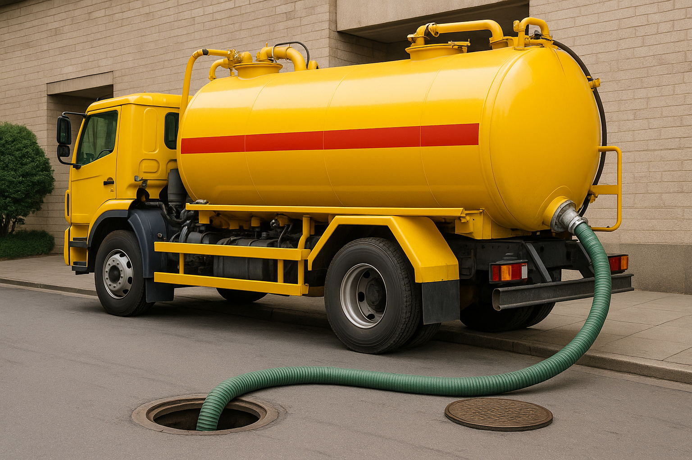
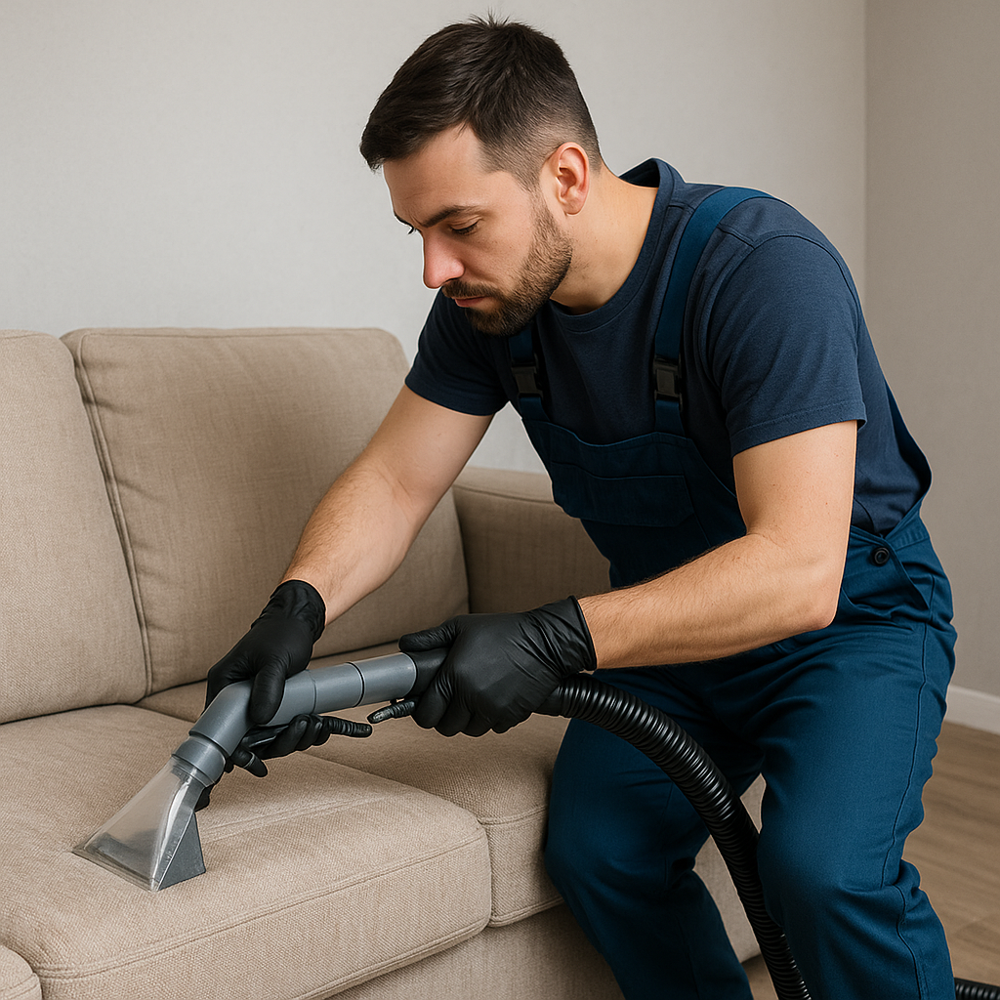
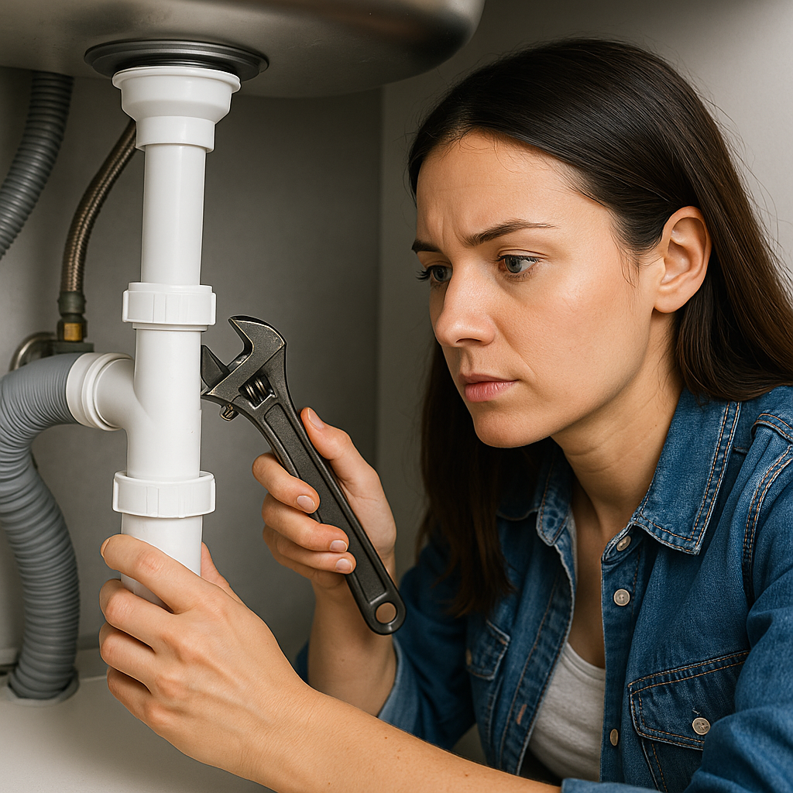

Servicios
Servicios Atmosféricos

Nos destaca la rapidez y la eficiencia. ¡En sólo 30 minutos!
Nuestro servicio atmosférico se destaca por utilizar camiones totalmente equipados con bombas de succión para extraer líquidos y residuos de pozos, tanques y sistemas de tratamiento de aguas residuales.
¿A quién van dirigido este servicio?
◉Empresas: Industrias, comercios, hoteles, restaurantes, y otros establecimientos que requieren sistemas de saneamiento eficientes. ◉Viviendas: Casas particulares con pozos ciegos o sépticos, que necesitan mantenimiento periódico. ◉Comunidades: Conjuntos residenciales, barrios cerrados y otras agrupaciones que comparten sistemas de saneamiento. ◉Eventos: Eventos al aire libre, festivales y ferias que requieren soluciones temporales de saneamiento.Servicios Tapizados

Brindamos nuestros servicios a domicilio. ¡Vamos a toda la ciudad!
En la limpieza de tapizados nos destacan nuestros excelentes productos de alta calidad y garantia asegurada.
Realizamos lavado y desinfección de:
◉Alfombras ◉Sillones y sillas ◉Colchones ◉Cortinas blackout (sistema roller)Mantenimientos Internos
Soluciones reales a problemas reales
Ofrecemos mantenimiento interno de tu hogar que abarca tareas esenciales para asegurar el buen estado y funcionamiento.